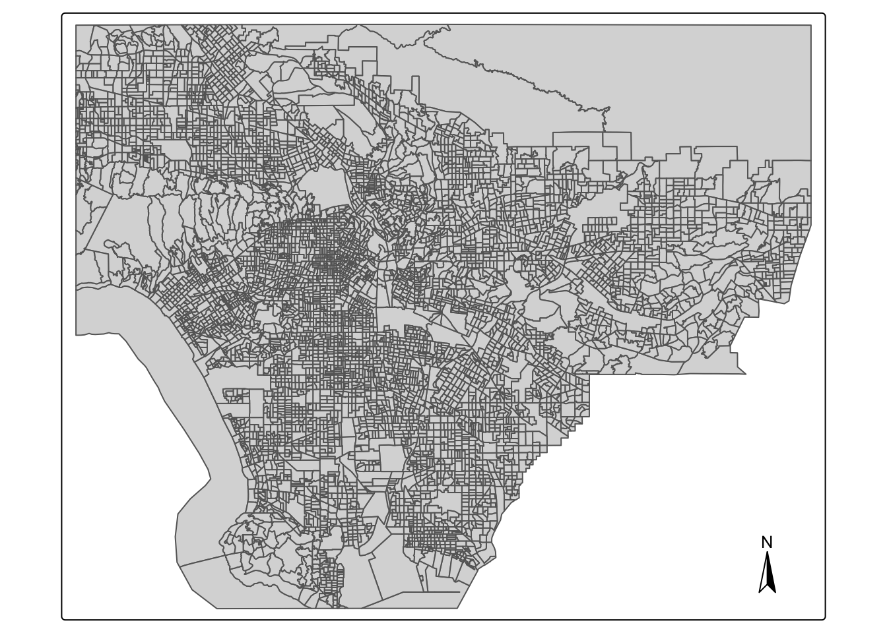
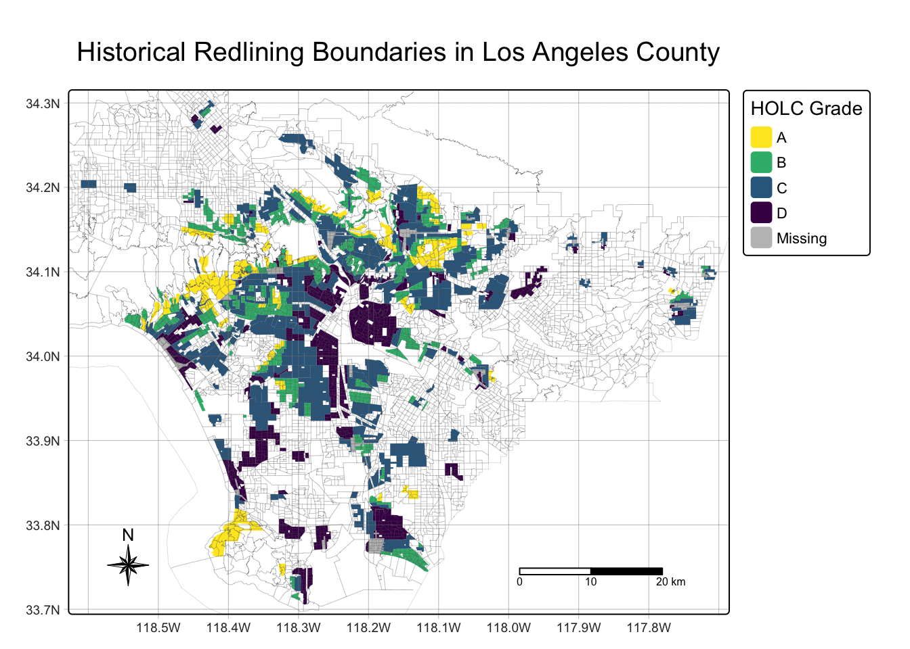
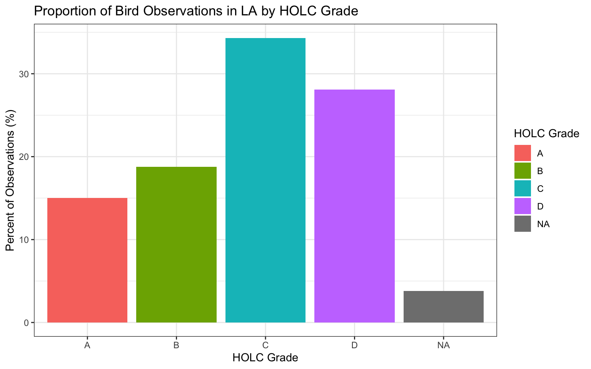

Historical Redlining, Environmental Hazards, and Bird Biodiversity
Author
Anna Ramji
Introduction & Overview
This data analysis project seeks to investigate how present-day environmental justice may reflect legacies of injustice in the past. The United States has a long history of racial segregation which is still visible. During the 1930’s the Home Owners’ Loan Corporation (HOLC), as part of the New Deal, rated neighborhoods based on their perceived safety for real estate investment. Their ranking system went from A (“most safe”) to D (“hazardous”). These rankings were also color-coded:
(A (green)
B (blue)
C (yellow)
D (red))
These rankings were then used to block access to loans for home ownership. Colloquially known as “redlining”, this practice has had widely-documented consequences not only for community wealth, but also health.1 Redlined neighborhoods have less greenery2 and are hotter than other neighborhoods .3
A recent study – co-authored by Dr. Millie Chapman, who was my graduate student instructor in an Environmental Data Science class taught by Carl Boettiger that I took at UC Berkeley in 2020 – found that redlining has not only affected the environments communities are exposed to, it has also shaped our observations of biodiversity.4
Community or citizen science, whereby individuals share observations of species, is generating an enormous volume of data. Ellis-Soto and co-authors found that redlined neighborhoods remain the most undersampled areas across 195 US cities. This gap is highly concerning, because conservation decisions are made based on these data.
To understand the current environmental, demographic, and public health conditions at a census block group level in LA County, I will be working with data from the United States Environmental Protection Agency’s EJScreen: Environmental Justice Screening and Mapping Tool.
This screening tool and data may be of interest to community residents or other stakeholders as they search for environmental or demographic information. It can also support a wide range of research and policy goals. The public has used EJScreen in many different locations and in many different ways.
EPA is sharing EJScreen with the public:
- to be more transparent about how we consider environmental justice in our work,
- to assist our stakeholders in making informed decisions about pursuing environmental justice and,
- to create a common starting point between the agency and the public when looking at issues related to environmental justice.
EJScreen provides a wide range of environmental and demographic information on the US at the Census tract and block group levels.
In this analysis, I will be working with block group data that has been downloaded from the EPA site. To understand the associated data columns, I explored the Technical Documentation and column description spreadsheet available via that same link. There are also limitations and caveats of the data, which you can read up on.
Mapping Inequality
A team of researchers, led by the Digital Scholarship Lab at the University of Richmond have digitized maps and information from the HOLC as part of the Mapping Inequality project.
In this project, I will be working with maps of HOLC grade designations for Los Angeles. Information on the data can be found here.5
Biodiversity observations
The Global Biodiversity Information Facility is the largest aggregator of biodiversity observations in the world. Observations typically include a location and date that a species was observed.
In this analysis, I will be working observations of birds from 2022.
Investigating the legacy of redlining in current environmental (in)justice
Loading relevant packages for my analysis:
Code
# generallibrary(tidyverse)library(here) # for reproducible file paths# for geospatial datalibrary(sf)library(tmap)library(terra)library(spData)library(spDataLarge)# for plotting & outputslibrary(patchwork) # for combined plotslibrary(scales) library(ggspatial)library(RColorBrewer) # for my custom color legendlibrary(viridis)library(gt)
Reading in the data
EJ Screen Data
Reading in EJ Screen data and filtering to Los Angeles County:
Code
# reading in the data from our data folder using the "here" packageej_screen <-st_read(here("data", "EJSCREEN_2023_BG_StatePct_with_AS_CNMI_GU_VI.gdb/"))
Reading layer `EJSCREEN_StatePctiles_with_AS_CNMI_GU_VI' from data source
`/Users/aramji/dev/github/personal/portfolio_repos/bird-biodiversity-holc/data/EJSCREEN_2023_BG_StatePct_with_AS_CNMI_GU_VI.gdb'
using driver `OpenFileGDB'
Simple feature collection with 243021 features and 223 fields
Geometry type: MULTIPOLYGON
Dimension: XY
Bounding box: xmin: -19951910 ymin: -1617130 xmax: 16259830 ymax: 11554350
Projected CRS: WGS 84 / Pseudo-Mercator
Code
# filtering dataset for block groups within LA County los_angeles <- ej_screen %>%filter(CNTY_NAME =="Los Angeles County") %>%st_transform(crs ="EPSG:4326")# checking filter accuracy:unique(los_angeles$CNTY_NAME)
[1] "Los Angeles County"
Redlining data
Code
# reading in the LA Redlining datala_redlining <-st_read("https://dsl.richmond.edu/panorama/redlining/static/citiesData/CALosAngeles1939/geojson.json") %>%st_make_valid() %>%# fix any invalid geometriesst_transform(crs =st_crs(los_angeles))
Reading layer `geojson' from data source
`https://dsl.richmond.edu/panorama/redlining/static/citiesData/CALosAngeles1939/geojson.json'
using driver `GeoJSON'
Simple feature collection with 417 features and 14 fields
Geometry type: MULTIPOLYGON
Dimension: XY
Bounding box: xmin: -118.6104 ymin: 33.70563 xmax: -117.7028 ymax: 34.30388
Geodetic CRS: WGS 84
Code
# check that the CRS matchcat("Do the CRS match?", st_crs(los_angeles) ==st_crs(la_redlining) )
Do the CRS match? TRUE
Bird observation data
Code
# reading in the bird observation databird_data <-st_read(here("data", "gbif-birds-LA", "gbif-birds-LA.shp"))
Reading layer `gbif-birds-LA' from data source
`/Users/aramji/dev/github/personal/portfolio_repos/bird-biodiversity-holc/data/gbif-birds-LA/gbif-birds-LA.shp'
using driver `ESRI Shapefile'
Simple feature collection with 1288865 features and 1 field
Geometry type: POINT
Dimension: XY
Bounding box: xmin: -118.6099 ymin: 33.70563 xmax: -117.7028 ymax: 34.30385
Geodetic CRS: WGS 84
Code
# filtering for observations from 2022 (within 2022)bird_data <- bird_data %>%filter(year ==2022) # checking to see if CRS matchcat("Do the CRS match?", st_crs(la_redlining) ==st_crs(bird_data))
Do the CRS match? TRUE
Exploring EJ Screen Data: Population Demographics & Environmental Hazards
To explore the EJ Screen data, I’ll explore income levels and proximity or exposure to environmental hazards data on a census block group level.
Wastewater exposure
Context: From the documentation of the EJ Screen data, we can find information on the P_PWDIS column, which I’ll be referring to as percentile wastewater discharge: “The wastewater discharge indicator quantifies a block group’s relative risk of exposure to pollutants in downstream water bodies. This is achieved using toxicity-weighted concentrations in stream reach segments within 500 meters of a block centroid, divided by distance in meters, presented as the population-weighted average of blocks in each block group.” (note: this is for the standard PWDIS column, not the percentile column)
Here I’ll map wastewater discharge by census block groups in LA County. I’ve indicated which census block groups are above the 95th percentile of national values for wastewater discharge by adding a centroid to those census block groups.
Code
# selecting the percentile wastewater discharge columnla_waste <- los_angeles %>%select("P_PWDIS")# finding the block groups (rows) that are above the 95th percentilela_over_95 <- la_waste %>%filter(P_PWDIS >95)# making centroids for our top 5th percentile subset of data to plot laterla_centroids_95 <-st_centroid(la_over_95)
Code
# making our plotwastewater_plot <-tm_shape(la_waste) +tm_fill(fill ="P_PWDIS", # coloring block groups by wastewater discharge lwd =0.1, # thinner lines for better visibilitytitle ="Wastewater Discharge (Percentile)") +# updating legend titletm_shape(la_centroids_95) +# adding centroidstm_dots(col ="chartreuse", # coloring centroids to stand out/be more visiblealpha =0.7, size =0.1) +# 0.2 was also too large to see the big cluster of them in the middle-right side of the maptm_add_legend(type ="dots", # labeling my centroids on the maplabels ="Census block groups above 95th Percentile",fill ="chartreuse") +tm_graticules(lwd =0.5, alpha =0.5) +# adding graticules for orientation and scaletm_compass(type ="8star", size =2, # adding compass for orientationposition =c("left", "bottom")) +tm_scale_bar(position =c("right", "bottom")) +# adding scale bar for more legible scaletm_title(text ="LA County Census Block Groups by Wastewater Discharge" , size =1# i had a hard time getting the tm_title size argument to work for making the title legible :( )# viewing the plotwastewater_plot
As you can see, this plot includes two islands (part of the Channel Islands) that we do not have data for. We can crop to a close-up view of the bulk of LA county in our future plots:
Code
# our current dataset includes two islands in which data was not collected. Because we have no data for them, let's crop our shapefile to get a more clear view of the mainland portion of LA that we have data for:# use a bbox to isolate LAla_crop <-st_crop(x = los_angeles, y =st_bbox(la_redlining))# check that crop is a Los Angeles without Channel Islandstm_shape(la_crop) +tm_polygons() +tm_compass()

The EJ Screen data we’re working with contains numerous other environmental hazard variable and demographic information, including respiratory cancer rates, proximity to Superfund sites, different air quality rates, income levels, and more. These variables are all also available as percentiles compared to national average rates for each metric.
To further this data exploration, and to give context for our future bird observation data exploration, I’ll investigate three more variables in the EJ Screen dataset.
Income level assessment
First, I’ll find the percent of census block groups in which less than 5% of the population is considered low income. In the documentation for this data, the LOWINCPCT variable is defined as “the percent of a block group’s population in households where the household income is less than or equal to twice the federal ‘poverty level’.”
Code
rich_la <- los_angeles %>%filter(LOWINCPCT <0.05)# Briana reminded me that NA values shouldn't be counted here, so I subtracted them from the total number of rows# finding the number of rows that have LOWINCPCT data in our filtered dataset, in case filtering for values below 0.05 didn't catch themtrue_rows_rich <-nrow(rich_la) -sum(is.na(rich_la$LOWINCPCT))# finding the number of rows in our original dataset that have LOWINCPCT datatrue_rows_inc_la <-nrow(los_angeles) -sum(is.na(los_angeles$LOWINCPCT))# finding the percent of census block groups that satisfy our conditionspct_rich_la <- true_rows_rich / true_rows_inc_la *100print(paste0("In Los Angeles County, the percent of census block groups in which less than 5% of the population is considered low income is ", round(pct_rich_la, 2), "%"))
[1] "In Los Angeles County, the percent of census block groups in which less than 5% of the population is considered low income is 6.11%"
Air quality & Superfund proximity
Next, I’ll find the percent of census block groups that are above the 80th percentile for Particulate Matter 2.5 and for Superfund proximity.
Code
# finding the number of rows in our LA dataset that have non-NA values for P_PM25pm_true_la <-nrow(los_angeles) -sum(is.na(los_angeles$P_PM25))# finding the number of rows in our LA dataset that have non-NA values for P_PNPLsuperfund_true_la <-nrow(los_angeles) -sum(is.na(los_angeles$P_PNPL))# selecting the rows (census block groups) that are above the 80th percentile for PM 2.5pm80_la <- los_angeles %>%filter(P_PM25 >80)# selecting the rows (census block groups) that are above the 80th percentile for Superfund proximitysuperfund80_la <- los_angeles %>%filter(P_PNPL >80)# finding the percent of census block groups in LA that are above the 80th percentile for PM 2.5 concentrations, dividing by the number of rows with PM 2.5 percentile data in the original datasetpct_pm80_la <-nrow(pm80_la)/pm_true_la *100# finding the percent of census block groups in LA that are above the 80th percentile for superfund proximity, dividing by the number of rows with superfund percentile data in the original datasetpct_superfund80_la <-nrow(superfund80_la)/superfund_true_la *100# finding the census block groups that are above the 80th percentile for both PM 2.5 and superfund proximityboth_80_la <- los_angeles %>%filter(P_PM25 >80& P_PNPL >80)# finding the percent of census block groups that fit both of these conditions, not filtering for NAs this time in the rows in our original dataset to show more of the datapct_both80_la <-nrow(both_80_la)/nrow(los_angeles) *100print(paste0("In Los Angeles County, ", round(pct_pm80_la, 2), "% of census block groups are above the 80th percentile for Particulate Matter 2.5"))
[1] "In Los Angeles County, 43.28% of census block groups are above the 80th percentile for Particulate Matter 2.5"
Code
print(paste0("In Los Angeles County, ", round(pct_superfund80_la, 2), "% of census block groups are above the 80th percentile for Superfund proximity"))
[1] "In Los Angeles County, 29.87% of census block groups are above the 80th percentile for Superfund proximity"
Code
print(paste0("In Los Angeles County, ", round(pct_both80_la, 2), "% of census block groups are both above the 80th percentile for Particulate Matter 2.5 AND Superfund proximity"))
[1] "In Los Angeles County, 17.36% of census block groups are both above the 80th percentile for Particulate Matter 2.5 AND Superfund proximity"
Exploring HOLC Grade Data
Mapping HOLC Grades
In this section, I’ll make a map displaying historical redlining boundaries, colored by HOLC grade.
Historically, HOLC Grade color codes have been:
A: Green
B: Blue
C: Yellow
D: Red
To make my visualizations more colorblind-friendly, I’m using the viridis color palette. The updated color coding is:
A: Yellow “#FDE725FF”
B: Green “35B779FF”
C: Blue “31688EFF”
D: Purple “440154FF”
Code
# setting custom viridis palette:my_palette <-viridis(4, direction =-1)# creating our map of historical redlining boundariesla_plot_holc <-tm_shape(la_redlining) +# adding HOLC grade layertm_fill(fill ="grade", # coloring by HOLC grade, title ="HOLC Grade", # updating legend titlepalette = my_palette) +# choosing colorblind-friendly palette tm_shape(los_angeles) +# adding LA census block group layer second so that we get a more zoomed-in viewtm_borders(alpha=0.5, lwd=0.1) +# showing block groups as borders, thin and semi-transparent linestm_graticules(lwd =0.5, alpha =0.5) +# adding graticules for orientation and scaletm_compass(type ="8star", size =2, # adding compass for orientationlwd =0.5, # thinner line width for more legible compassposition =c("left", "bottom")) +# making sure it doesn't cover our maptm_scale_bar(position =c("right", "bottom")) +# adding scale for more easy-to-interpret scaletm_title("Historical Redlining Boundaries in Los Angeles County") # updating titlela_plot_holc

The lower grades (C and D) have been linked to higher rates of exposure to environmental hazards, like the ones discussed earlier in this notebook, which has serious health and safety implications 6.
HOLC Grade Data + EJ Screen Data
As we can see in the map above, the HOLC grade data does not cover the full extent of our census block groups and associated data.
Census block groups within HOLC grade areas
To bring the EJ Screen data into the Redlining analysis, I will find the number of census block groups that fall within areas with HOLC grades.
I used this image from the textbook Geocomputation with R to think about different approaches to this problem.
Code
# I made sure that the CRS matched in my "importing data" steps at the beginning# Chapter 4.2.1 and 4.2.2 of the textbook Geocomputation with R, along with documentation on st_join helped me get this version, using st_within as an argument of the function st_join:block_groups_within <-st_join(x = los_angeles, # find geometries in xy = la_redlining, # that are within yjoin = st_within, left =FALSE) # perform an inner join, not a left joinnum_blocks_within <-nrow(block_groups_within) print(paste0("There are ", num_blocks_within, " census block groups in Los Angeles County that fall within areas with HOLC grades."))
[1] "There are 920 census block groups in Los Angeles County that fall within areas with HOLC grades."
This value is an important baseline to understand the quantity and context of the data analysis. In the earlier map of HOLC grades, we saw that the HOLC grade data does not cover the current extent of LA County census block groups – our analysis can only extend to the 920 census block groups that fall within these historic redlining areas.
Current conditions by HOLC Grade
In the following table, I’ll summarize current conditions based on EJScreen data within historical redlining categories using the mean of the following variables: - % low income (EJScreen column name: LOWINCPCT) - percentile for particulate Matter 2.5 (EJScreen column name: P_PM25) - percentile for low life expectancy (EJScreen column name: P_LIFEEXPPCT) - percentile for air toxics cancer risk (EJScreen column name: P_CANCER)
Code
# grouping our data to get the summary statistics for each HOLC gradeholc_means_summary <- block_groups_within %>%group_by(grade) %>%# grouping by HOLC gradest_drop_geometry() %>%# dropping geometries for optimized processingsummarize(low_inc_pct =round(mean((LOWINCPCT *100), na.rm =TRUE), 3), # getting summary statistics, removing NA values p_pm_25 =round(mean(P_PM25, na.rm =TRUE), 3),p_low_life_expectancy =round(mean(P_LIFEEXPPCT, na.rm =TRUE), 3),p_airtoxics_risk =round(mean(P_CANCER, na.rm =TRUE), 3)) # viewing outputholc_means_summary %>%gt() %>%tab_header(title ="Mean Population Values by HOLC Grade")
Mean Population Values by HOLC Grade
grade
low_inc_pct
p_pm_25
p_low_life_expectancy
p_airtoxics_risk
A
17.816
67.933
22.600
29.667
B
28.053
78.922
43.378
47.494
C
41.047
81.336
58.583
56.847
D
43.881
82.805
59.280
64.017
NA
44.789
73.969
65.188
38.344
Discussion
Across all of the summary statistics, the lowest HOLC grade (D, historically the most redlined), has the highest values for mean percent of households that qualify as low income (annual household income is two times above the national poverty level) per census block group (43.88), mean percentile for particulate matter (measured in PM 2.5) (82.81), mean percentile for low life expectancy (59.28), and mean percentile for air toxics cancer list (64.02). The highest HOLC grade, A, conversely has the lowest values for all of our demographic and health hazard indicators, with a mean percent low income households per census block group of 18, mean percentile for particulate matter (measured in PM 2.5) (67.93), mean percentile for low life expectancy (22.6), and mean percentile for air toxics cancer list (29.67).
Our summary statistics indicate that in neighborhoods that were rated as less safe for real estate investment in the 1930s (everything below grade A, with increasing severity), have higher percentages of the population that qualify as low-income, and compared to the national average, have higher percentiles of the population exposed to higher levels of PM 2.5 (worse air quality), have higher percentiles of the population with increased risk and exposure to cancer from air toxics, and higher percentiles of their populations have a lower life expectancy.
These summary statistics support the argument that historically redlined neighborhoods may be an indicator of level of safety for public health and safety in terms of exposure to environmental hazards 7, which in turn supports or perpetuates institutional racism and racially differentiated risks in Los Angeles, at the very least.
Investigating the legacy of redlining in biodiversity observations
For bird observations from 2022 that fall within neighborhoods with HOLC grades, I found the percent of observations within each redlining categories and plotted the results below.
Code
# I made sure that all datasets shared the same CRS when I read in the data initially# using st_join to join the redlining data and bird observations datajoined_birds <-st_join(la_redlining, bird_data, join = st_contains # I also tried st_within, but that could potentially cover up observations that happen on borders of polygons, so I stuck with contains )# number of observations of birds in all HOLC gradestotal_bird_obs <-nrow(joined_birds)# creating a dataframe of grouped, summarized statistics (proportion of bird observations per HOLC grade)grouped_birds <- joined_birds %>%st_drop_geometry() %>%# dropping geometries for optimized runninggroup_by(grade) %>%# grouping by HOLC gradesummarize(pct_grade = (n()/total_bird_obs) *100) # finding the percent of observations in each HOLC grade groupgrouped_birds %>%gt() %>%tab_header(title ="Bird Observations", subtitle ="% of observations per HOLC Grade" )
Bird Observations
% of observations per HOLC Grade
grade
pct_grade
A
15.011837
B
18.771759
C
34.312770
D
28.101936
NA
3.801699
Code
# block group C is the highest!
Code
# plotting our proportions of bird counts per HOLC gradebird_obs_plot <-ggplot(data = grouped_birds) +# using geom_col for proportional bar plotgeom_col(aes(x = grade, y = pct_grade,fill = grade)) +# coloring by HOLC gradelabs(title ="Proportion of Bird Observations in LA by HOLC Grade", # updating titlex ="HOLC Grade", # updating axes labelsy ="Percent of Observations (%)",fill ="HOLC Grade") +# updating legend titletheme_bw() # setting the plot theme # saving plotggsave(filename ="bird_obs_plot.png", plot = bird_obs_plot, path =here("figs"), width =8, height =5)# viewing plotbird_obs_plot

Conclusion & Limitations
Considering that we generally associate birds with more green spaces like parks, and “higher” HOLC grades would likely indicate more green spaces (as mentioned in the introduction of this assignment, redlined neighborhoods have less greenery and are hotter than other neighborhoods), these results are slightly surprising, as the higher HOLC grades have proportionately fewer bird observations. The highest proportion of bird observations are within HOLC grade C, the “second to least safe” neighborhood group for real estate investment from 1930. The proportion of observations in D are also higher than A or B, but lower than C. This could be explained by several factors.
Firstly, that birds prefer waterfront areas that are near shipping operations like ports or rivers, which may be less desirable neighborhoods to live in due to pollution, noise, odors, or other aspects that may have led to these neighborhoods being graded lower. Secondly, that neighborhoods that were historically graded lower have had less development as the city grew and rent was driven up by gentrification, leading to more empty lots or undeveloped spaces which birds may have flocked to. The higher graded neighborhoods may have had a lot of development, including higher storied buildings (like skyscrapers, high-rises) and other buildings that are less bird-friendly, despite any manufactured or artificial green spaces. This could also imply that the neighborhoods that were considered safer for real estate investments in the 1930s grew into more urban spaces, with competition to keep developing artificial structures, adding concrete and less organic features. This could be one of many factors explaining the low number of bird observations in these higher-graded areas. Another possibility is that as Los Angeles became increasingly populated and the city developed, the previously redlined block groups became more gentrified, with housing costs rising and more development of features that tenants paying higher rent may come to expect, such as proximity to green spaces. These previously redlined neighborhoods may now have more greenery than their 1930s predecessors. For further analysis, using satellite greenery/vegetation index data would be helpful in understanding the complexity of our observations.
Sources
Ellis-Soto, D., Chapman, M., & Locke, D. H. (2023). Historical redlining is associated with increasing geographical disparities in bird biodiversity sampling in the United States. Nature Human Behaviour, 1-9.
Gee, G. C. (2008). A multilevel analysis of the relationship between institutional and individual racial discrimination and health status. American journal of public health, 98(Supplement_1), S48-S56.
Global Biodiversity Information Facility [Data File]. Available from https://www.gbif.org/ Access date: December 15, 2023.
Hoffman, J. S., Shandas, V., & Pendleton, N. (2020). The effects of historical housing policies on resident exposure to intra-urban heat: a study of 108 US urban areas. Climate, 8(1), 12.
Nardone, A., Rudolph, K. E., Morello-Frosch, R., & Casey, J. A. (2021). Redlines and greenspace: the relationship between historical redlining and 2010 greenspace across the United States. Environmental health perspectives, 129(1), 017006.
Nelson, R. K., Winling, L, et al. (2023). Mapping Inequality: Redlining in New Deal America. [Data File] Digital Scholarship Lab. https://dsl.richmond.edu/panorama/redlining. Accessed December 15, 2023.
United States Environmental Protection Agency (2023), EJScreen: Environmental Justice Screening and Mapping Tool [Data file] Available from: https://www.epa.gov/ejscreen/download-ejscreen-data Access date: December 15, 2023.
Footnotes
Gee, G. C. (2008). A multilevel analysis of the relationship between institutional and individual racial discrimination and health status. American journal of public health, 98(Supplement_1), S48-S56.↩︎
Nardone, A., Rudolph, K. E., Morello-Frosch, R., & Casey, J. A. (2021). Redlines and greenspace: the relationship between historical redlining and 2010 greenspace across the United States. Environmental health perspectives, 129(1), 017006.↩︎
Hoffman, J. S., Shandas, V., & Pendleton, N. (2020). The effects of historical housing policies on resident exposure to intra-urban heat: a study of 108 US urban areas. Climate, 8(1), 12.↩︎
Ellis-Soto, D., Chapman, M., & Locke, D. H. (2023). Historical redlining is associated with increasing geographical disparities in bird biodiversity sampling in the United States. Nature Human Behaviour, 1-9.↩︎
Nelson, R. K., Winling, L, et al. (2023). Mapping Inequality: Redlining in New Deal America. [Data File] Digital Scholarship Lab. https://dsl.richmond.edu/panorama/redlining. Accessed December 15, 2023.↩︎
Gee, G. C. (2008). A multilevel analysis of the relationship between institutional and individual racial discrimination and health status. American journal of public health, 98(Supplement_1), S48-S56.↩︎
Gee, G. C. (2008). A multilevel analysis of the relationship between institutional and individual racial discrimination and health status. American journal of public health, 98(Supplement_1), S48-S56.↩︎